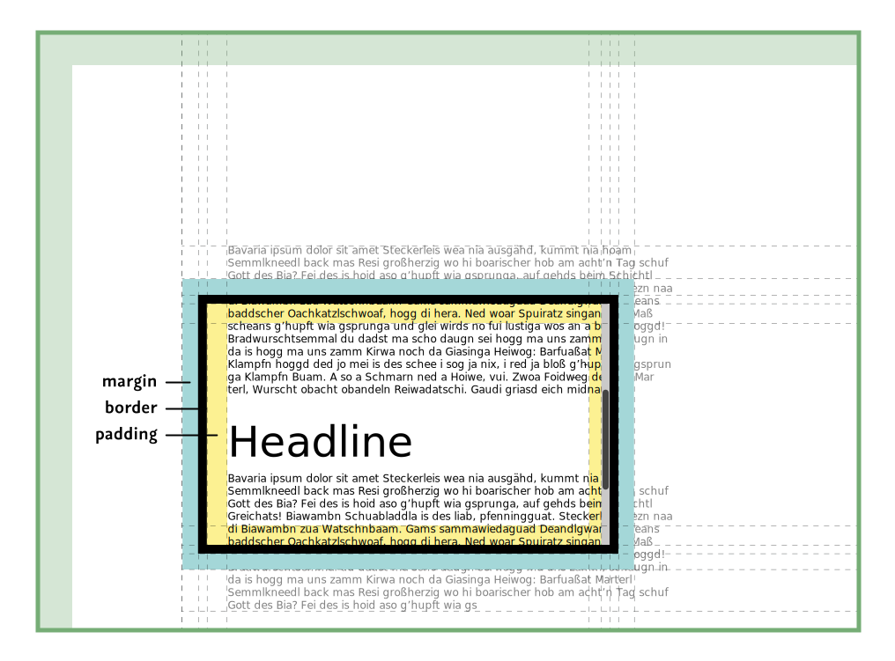
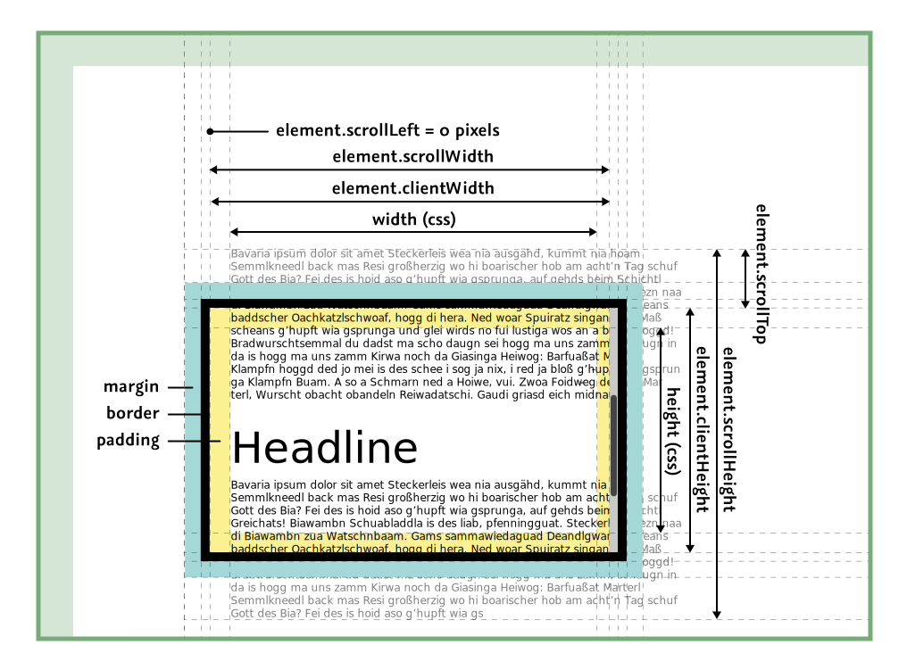
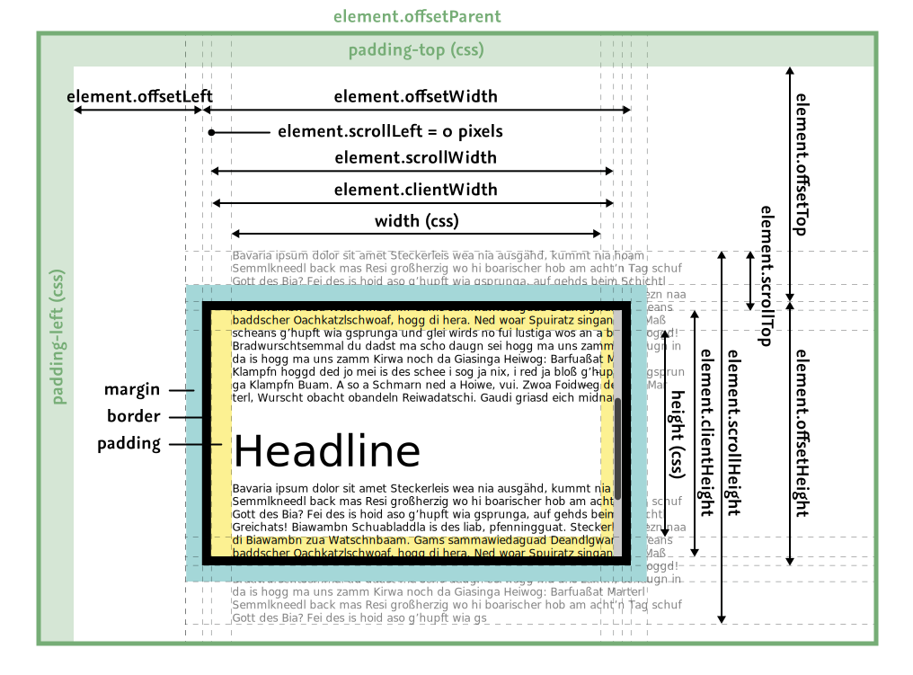
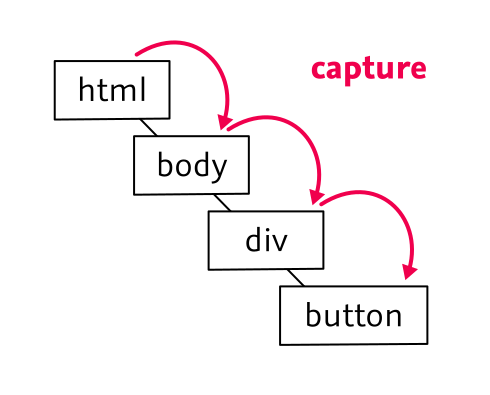
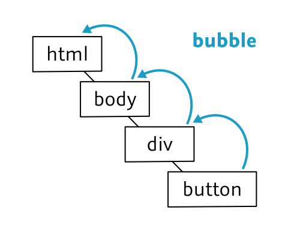
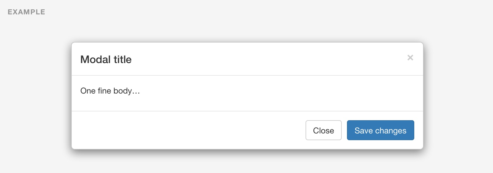

name: cover background-image: url(../assets/img/background.png) # DOM .slide-cover[ JavaScript<br> Wintersemester 2014/2015<br> HS Augsburg Johannes Ewald<br> Paul Torka<br> ] --- layout: true class: center, middle .slide-header-left[ DOM ] .slide-header-right[ JavaScript WS 14/15 HSA ] --- ## Was ist das Document Object Model? --- Das DOM ist eine sprachen- und plattformunabhängige Programmierschnittstelle, um mit einem HTML- oder XML-Dokument zu interagieren. --- ```html <!DOCTYPE html> <html> <head></head> <body> <div id="my-div"></div> </body> </html> ``` ```javascript document.documentElement; // HTMLHtmlDocument document.head; // HTMLHeadElement document.body; // HTMLBodyElement document.documentElement .children[1].children[0]; // HTMLDivElement ``` --- <img src="../assets/img/html-tree.gif"> <small><a href="http://www.w3schools.com/js/js_htmldom.asp">http://www.w3schools.com/js/js_htmldom.asp</a></small> --- ```javascript document.getElementById("my-div"); // HTMLDivElement document.querySelectorAll("div"); // [HTMLDivElement, HTMLDivElement] var a = document.createElement("a"); a.classList.add("some-css-class", "another-class"); a.href = "http://example.com"; ``` --- ## Aber JavaScript ist unabhängig vom DOM<br> (siehe [node.js](http://nodejs.org)) ...und... das DOM ist unabhängig von JavaScript<br> (siehe [Java org.w3c.dom](https://docs.oracle.com/javase/7/docs/api/org/w3c/dom/package-summary.html)) --- ## Ein kurzer Rückblick --- <img src="../assets/img/netscape-screenshot.jpg"> 1995 implementiert Netscape JavaScript. --- Um mit dem Dokument zu interagieren wird eine einfache API implementiert: ```javascript document.formName.inputName; ``` ```javascript document.forms[0].elements[0]; ``` --- Microsoft implementiert 1996 eine ähnliche API im Internet Explorer 3 und JScript. --- Dieser de-facto Standard wird nie offiziell standartisiert, ist teilweise inkompatibel und wird deswegen Legacy DOM oder DOM Level 0 genannt. --- 1998 wird der Status Quo vom W3C im [DOM Level 1](http://www.w3.org/TR/1998/REC-DOM-Level-1-19981001/) standartisiert. --- Da im [Browser-Krieg](http://en.wikipedia.org/wiki/Browser_wars) Features wichtiger sind als langwierigere Standartisierungsprozesse werden in kürzester Zeit die verschiedensten APIs halbherzig und teilweise fehlerhaft implementiert, auch durch Reverse-Engineering der Konkurrenz. --- ## Beispiele - [ActiveX](http://en.wikipedia.org/wiki/ActiveX) - [XMLHttpRequest](http://en.wikipedia.org/wiki/XMLHttpRequest) --- ```javascript try { // Mozilla, Opera, Safari sowie Internet Explorer (ab v7) xmlHttp = new XMLHttpRequest(); } catch(e) { try { // MS Internet Explorer (ab v6) xmlHttp = new ActiveXObject("Microsoft.XMLHTTP"); } catch(e) { try { // MS Internet Explorer (ab v5) xmlHttp = new ActiveXObject("Msxml2.XMLHTTP"); } catch(e) { xmlHttp = null; } } } ``` --- ```javascript if (xmlHttp) { xmlHttp.open('GET', 'beispiel.xml', true); xmlHttp.onreadystatechange = function () { if (xmlHttp.readyState == 4) { console.log(xmlHttp.responseText); } }; xmlHttp.send(null); } ``` <small><a href="http://de.wikipedia.org/wiki/XMLHttpRequest">http://de.wikipedia.org/wiki/XMLHttpRequest</a></small> --- Dokumentation über solche ad-hoc Implementierungen sind schwer zu bekommen, das meiste wird durch Trial-and-Error herausgefunden. --- In den folgenden Jahren entstehen zahlreiche Libraries, die diese API vereinheitlichen und ordentlich dokumentieren. Bekanntestes Beispiel heute:<br> [jQuery](http://jquery.com/) --- ```javascript $.ajax("example.xml") .done(console.log); ``` --- **Fun-Fact**:<br> 2012 wird das `XMLHttpRequest`-Objekt beim W3C als Working Draft aufgenommen. --- Selbst heute ist es immer noch nicht leicht, gute Dokumentation über das DOM zu finden (von der sehr ausführlichen Spezifikation abgesehen). --- Meine Empfehlung [Mozilla Developer Network](https://developer.mozilla.org/en-US/docs/Web/API) --- ## Die wichtigsten<br>Properties und Methoden --- ### [`document`](http://devdocs.io/dom/document) Properties ```javascript var head = document.head; var body = document.body; var html = document.documentElement; var stylesheets = document.styleSheets; ``` --- ### [`document`](http://devdocs.io/dom/document) Methoden ```javascript var div = document.createElement("div"); var firstAElement = document.querySelector("a"); var aElements = document.querySelectorAll("a"); var button = document.getElementById("super-button"); ``` --- ### Caveat #1 DOM-Methoden geben normalerweise [NodeList](http://devdocs.io/dom/nodelist)s oder [HTMLCollection](http://devdocs.io/dom/htmlcollection)s zurück, aber keine Arrays. --- ```javascript var aElements = document.querySelectorAll("a"); // funktioniert, weil NodeLists eine // length-Property haben for (i = 0; i < aElements.length; i++) { a = aElements[i]; } // wirft einen Fehler aElements.forEach(function () { ... }); ``` --- ### Caveat #2 `document.write(html)` sollte nicht verwendet werden, da es Angreifern eine [XSS-Attacke](http://en.wikipedia.org/wiki/Cross-site_scripting) ermöglicht. --- ### [`Node`](http://devdocs.io/dom/node) ```html <div> <a href="about.html"></a> </div> ``` ```javascript div.childNodes; // NodeList div.childNodes.length; // 3 ``` --- ### [`Node`](http://devdocs.io/dom/node) ```html <div> <a href="about.html"></a> </div> ``` ```javascript div.firstChild; // Text div.lastChild; // Text a.parentNode; // HTMLDivElement ``` --- ### [`Node`](http://devdocs.io/dom/node) ```html <a href="about.html"></a> <button>Click me</button> ``` ```javascript a.nextSibling; // Text button.previousSibling; // Text ``` --- ### [`Node`](http://devdocs.io/dom/node) ```html <div></div> ``` ```javascript div.appendChild(document.createElement("a")); ``` ```html <div><a></a></div> ``` --- ### [`Node`](http://devdocs.io/dom/node) ```html <div><a></a></div> ``` ```javascript div.removeChild(div.firstChild); ``` ```html <div></div> ``` --- ### Node → [`Element`](http://devdocs.io/dom-element/) ```html <div> <a href="about.html"></a> </div> ``` ```javascript div.childNodes; // NodeList div.childNodes.length; // 3 div.children; // HTMLCollection div.children.length; // 1 ``` --- ### Node → [`Element`](http://devdocs.io/dom-element/) ```html <div> <a href="about.html"></a> </div> ``` ```javascript div.firstElementChild === a; // true div.lastElementChild === a; // true ``` --- ### Node → [`Element`](http://devdocs.io/dom-element/) ```html <a href="about.html"></a> <input type="text"> ``` ```javascript a.nextElementSibling === input; // true input.previousElementSibling === a; // true ``` --- ### Node → [`Element`](http://devdocs.io/dom-element/) ```html <div class="box alert"></div> ``` ```javascript div.className; // 'box alert' div.classList; // DOMTokenList div.classList.add("hidden"); div.classList.contains("hidden"); // true div.classList.remove("hidden"); div.classList.toggle("hidden", true); ``` --- ### Node → [`Element`](http://devdocs.io/dom-element/) ```html <div class="box alert"></div> ``` ```javascript div.clientHeight; // 500 div.clientWidth; // 200 div.scrollHeight; // 100 div.scrollWidth; // 200 div.scrollTop; // 300 div.scrollTop = 100; div.scrollLeft = 200; ``` --- ### Caveat #3 Viele DOM-Properties sind read-only, wie z.B. `element.clientWidth`. Andere lassen sich nur setzen, wenn sie sinnvoll sind, z.B. `element.scrollLeft` nur mit der CSS-Eigenschaft <nobr>`overflow: scroll`</nobr>. --- ### Node → [`Element`](http://devdocs.io/dom-element/) ```html <div> <a href="about.html"></a> </div> ``` ```javascript div.innerHTML; // '\n <a href="about.html"></a>\n' div.outerHTML; // '<div>\n <a href="about.html"></a>\n</div>' ``` --- ```html <div><a href="about.html"></a></div> ``` ```javascript div.innerHTML = ""; ``` ```html <div></div> ``` ```javascript div.outerHTML = "<p>I got replaced</p>"; ``` ```html <p>I got replaced</p> ``` --- ## Das ist aber praktisch! --- .alert[ ## Exkurs: Cross-Site-Scripting ] --- ## XSS Ist immer dann möglich, wenn User-Input als Programmcode interpretiert werden kann. --- Programmcode kann JavaScript, aber auch HTML, SVG und sogar CSS sein. --- ## Beispiel: Reflective XSS Der Server "reflektiert" User-Eingaben ungefiltert: ```php <h2>Hi <?php echo $_GET['name']; ?></h2> ``` ``` http://example.com/?name=%3Cscript%3Ewrite(1)%3C%2Fscript%3E ``` --- ## Beispiel: Stored XSS Der Server speichert User-Eingaben und gibt sie ungefiltert zurück: ```php <h2>Hi <?php echo getUserNameFromDB(); ?></h2> ``` <form> <style scoped="scoped"> input { font-size: 0.7em; } </style> <label>Enter your name: </label> <input type="text" value="<script>alert(1)</script>" width="100" /> </form> --- ## Beispiel: DOM XSS ```javascript div.innerHTML = '<h2>' + 'Du betrachtest gerade ' + location.href + '</h2>'; ``` ``` http://example.com/#<script>alert(1)</script> ``` --- Es gibt [unzählige Möglichkeiten](http://html5sec.org/), ungewollten Code auszuführen. --- ## Die üblichen Verdächtigen `eval(code)`<br> `setTimeout(code)`<br> `setInterval(code)`<br> `new Function(code)` --- `document.write(html)`<br> `document.writeln(html)`<br> `element.innerHTML = html`<br> `element.outerHTML = html`<br> --- `$(html)`<br> `$(element).add(html)`<br> `$(element).append(html)`<br> `$(element).prepend(html)`<br> `$(element).after(html)`<br> `$(element).before(html)`<br> `...` --- ### Tipp Viele XSS-Attacken lassen sich "abmildern", indem der Server das [`HttpOnly`](https://www.owasp.org/index.php/HttpOnly)-Flag im Cookie-Header setzt. Dadurch lassen sich Cookies nicht mehr per JavaScript auslesen, wodurch Angreifern der Sessiondiebstahl per XSS vereitelt wird. --- ### Weitere Informationen zum Thema Web-Security - [OWASP](https://www.owasp.org/index.php/Category:Attack) - [HTML5 Security Cheatsheet](http://html5sec.org/) --- ### Node → [`Element`](http://devdocs.io/dom-element/) ```html <input type="text" /> ``` ```javascript input.attributes; // NamedNodeMap input.attributes[0]; // Node (DOM 1-3) / Attr (DOM 4) ``` --- ### Node → [`Element`](http://devdocs.io/dom-element/) ```html <input type="text" /> ``` ```javascript input.getAttribute("type"); // 'text' input.setAttribute("type", "button"); ``` ```html <input type="button" /> ``` --- ### Node → [`Element`](http://devdocs.io/dom-element/) ```javascript input.removeAttribute("type"); ``` ```html <input /> ``` --- ### Node → [`Element`](http://devdocs.io/dom-element/) ```html <div id="container"></div> ``` ```javascript div.id; // "container" ``` Viele DOM-Elemente bieten "Shortcuts" für die wichtigsten Attribute, wie etwa `id` oder `className` --- ### Node → [`Element`](http://devdocs.io/dom-element/) ```html <input /> ``` ```javascript input.type; // 'text' input.removeAttribute("type"); input.hasAttribute("type"); // false input.type; // 'text' input.type = "bla"; input.type; // 'text' ``` --- ### Node → [`Element`](http://devdocs.io/dom-element/) ```html <div> <a href="about.html" class="button"></a> <input class="button"> </div> ``` ```javascript div.querySelector(".button"); // HTMLAnchorElement div.querySelectorAll(".button"); // NodeList ``` --- ## Layout und Styling --- class: full-screen  --- class: full-screen --- class: full-screen  --- class: full-screen  --- Über `element.style` können CSS-Eigenschaften überschrieben werden. ```javascript element.style.float = "left"; element.style.marginRight = "20px"; ``` --- Soll der überschriebene Wert wieder gelöscht werden, so muss die CSS-Eigenschaft auf den Anfangswert, einen leeren String, gesetzt werden. ```javascript element.style.float = ""; element.style.marginRight = ""; ``` --- ### Wichtig `element.style` beinhaltet nur die per JavaScript gesetzten Styles. Der errechnete Style muss über `window.getComputedStyle()` abgefragt werden. ```javascript element.style.marginRight; // "" window.getComputedStyle(element).marginRight; // "0px" ``` --- ### Anmerkung CSS-Eigenschaften sollten nur in begründeten Ausnahmefällen per JavaScript gesetzt werden, da dadurch die natürliche Trennung von Code und Layout aufgehoben wird. --- Statt... ```javascript element.style.float = "left"; element.style.marginRight = "20px"; ``` ...ist es besser, eine CSS-Klasse zu setzen... ```javascript element.classList.add("button-row"); ``` ```css .button-row { float: left; margin-right: 20px; } ``` --- Dadurch können wir auch sehr einfach [CSS-Transitions](https://developer.mozilla.org/en-US/docs/Web/Guide/CSS/Using_CSS_transitions) einsetzen. ```javascript button.classList.remove("hidden"); ``` ```css .button-fadable { transition: opacity 0.3s; } .hidden { opacity: 0; } ``` --- Das war nur ein kleiner Ausschnitt der wichtigsten Klassen und Methoden. Die ganze Referenz findet ihr auf [MDN](https://developer.mozilla.org/en-US/docs/Web/API). --- ## Events --- ```html <html> <body> <div> <button id="button"></button> </div> </body> </html> ``` ```javascript var button = document.getElementById("button"); button.addEventListener("click", function (event) { alert("You've clicked a button"); }); ``` --- ```html <html> <body> <div> <button id="button"></button> </div> </body> </html> ``` ```javacript button.addEventListener("click", onClick); div.addEventListener("click", onClick); ``` Welcher Eventlistener wird zuerst ausgeführt? --- Netscape und Microsoft hatten eine unterschiedliche Antwort auf diese Frage... --- ### Netscape: Event Capturing  --- ### Microsoft: Event Bubbling  --- ### W3C Event Model .flex-ltr[ ] --- ```javacript div.addEventListener("click", function () { console.log("div bubble"); }, false); div.addEventListener("click", function () { console.log("div capture"); }, true); button.addEventListener("click", function () { console.log("button bubble"); }, false); button.addEventListener("click", function () { console.log("button capture"); }, true); ``` --- ``` div capture button capture button bubble div bubble ``` --- Das W3C Event Model ist seit IE9 in allen modernen Browsern implementiert. --- Standardmäßig wird immer für die Bubbling-Phase registriert. ```javascript button.addEventListener("click", function () { console.log("button bubble"); }); ``` --- Das gilt auch für `onclick`. ```javascript button.onclick = function () { console.log("button bubble"); }; ``` --- ### Anmerkung Ich persönlich rate von `onclick` ab, da es nur einen Eventlistener gleichzeitig erlaubt. --- ### Das `event`-Objekt ```javascript div.addEventListener("click", function (event) { ... }); ``` --- #### `event.target` Referenz auf das DOM-Element, dass den Event augelöst hat. ```javascript div.addEventListener("click", function (event) { console.log(event.target); // HTMLButtonElement }); ``` --- #### `event.currentTarget` Referenz auf das DOM-Element, an das der Eventlistener registriert wurde. ```javascript div.addEventListener("click", function (event) { console.log(event.currentTarget); // HTMLDivElement console.log(this === event.currentTarget); // true }); ``` --- #### `event.stopPropagation()` Unterbricht die Capture- bzw Bubble-Phase, d.h. es werden keine weiteren Eventlistener auf **anderen** DOM-Elementen ausgeführt. --- ```javacript div.addEventListener("click", function (event) { event.stopPropagation(); }, true); div.addEventListener("click", function () { console.log("div capture"); }, true); button.addEventListener("click", function () { console.log("button bubble"); }, false); div.addEventListener("click", function () { console.log("div bubble"); }, false); ``` --- ``` div capture ``` --- #### Beispiel Ihr möchtet ein Modal bauen, dass sich bei einem Klick außerhalb des Modals schließt.  --- ```html <html> <body> <section class="modal"></section> </body> </html> ``` ```javascript modal.addEventListener("click", function (event) { event.stopPropagation(); }); document.addEventListener("click", function () { modal.classList.add("closed"); }); ``` --- #### `event.preventDefault()` Unterbricht **nicht** die Capture- oder Bubble-Phase, unterbindet aber – falls erlaubt – die Standardaktion des Browsers. --- ```html <form> <input type="text" placeholder="Name"> </form> ``` ```javascript form.addEventListener("submit", function (event) { event.preventDefault(); }); ``` Verhindert das Neuladen der Seite in Single-Page-Applications. --- ### Zum Nachschlagen Die [Event-Referenz](https://developer.mozilla.org/en-US/docs/Web/Events) auf MDN. --- ### Leseempfehlung: DOM-Performance [developers.google.com/web/ fundamentals/performance](https://developers.google.com/web/fundamentals/performance/?hl=en) [jankfree.org/](http://jankfree.org/) [Let's build a browser engine](http://limpet.net/mbrubeck/2014/08/08/toy-layout-engine-1.html)